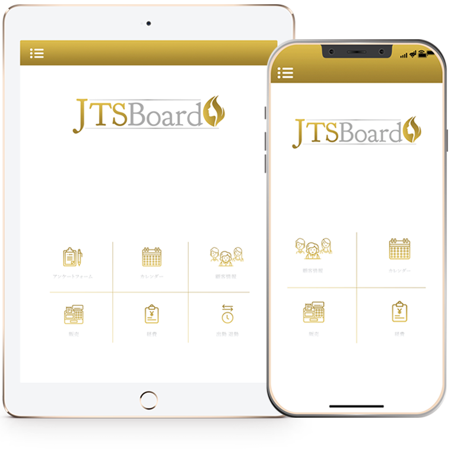

次世代のサロン管理システム
こんにちは、広報担当のYUKIです。
今日はサロン管理システムであるJTSBoardの機能的な
部分をご紹介しますね！
システムと聞くと、、、、
みなさんどんな印象を持ちますか？
難しそう？
自分でやるから必要ない？
などなど
実はサロン開業にあたって、
何らかシステムを導入している割合は
既に５０％を超えているんです。
予約システムだったりスタッフのシフト・勤怠、
レジ機能など
システムというものはかなり身近で便利で
コストをかけなくても利用できる
ものになりました。
ただ問題点として
・複数のシステムを並行して利用している
ゆえに手間がかかる
・使ってはいるが、使いこなせていない
複雑なものが多い（特に分析機能など）
このようなポイントが挙げられます。
JTSBoradはそんな問題を解消、、、
・全てのサロン業務がたった１つのアプリで管理可能
そして
多くのオーナー様たちが苦手とする
“システムを使いこなす”“溜まったデータを活用する”
これはAIがオーナー様に変わって行ってしまうのです。
ここが次世代サロン管理システムと言われるポイントです。
続きは次の記事でお伝えしていきますね♪
